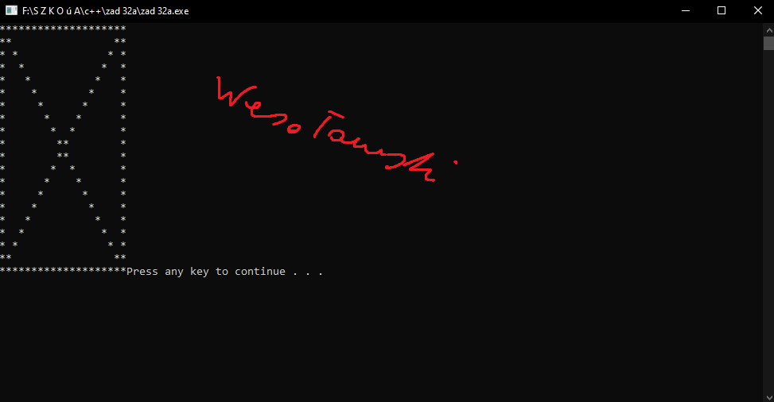

 #include <cstdlib> #include <iostream> #include <windows.h> using namespace std; void gotoxy(int x, int y) { COORD coord; coord.X = x; coord.Y = y; SetConsoleCursorPosition(GetStdHandle(STD_OUTPUT_HANDLE), coord); } int main(int argc, char *argv[]) { for (int i=0;i<=19;i++) { gotoxy(i,0); cout<<"*"; } for (int i=0;i<=19;i++) { gotoxy(0,i); cout<<"*"; } for (int i=0;i<=19;i++) { gotoxy(19-i,i); cout<<"*"; } for (int i=0;i<=19;i++) { gotoxy(i,i); cout<<"*"; } for (int i=0;i<=19;i++) { gotoxy(19,i); cout<<"*"; } for (int i=0;i<=19;i++) { gotoxy(i,19); cout<<"*"; } system("PAUSE"); return EXIT_SUCCESS; }